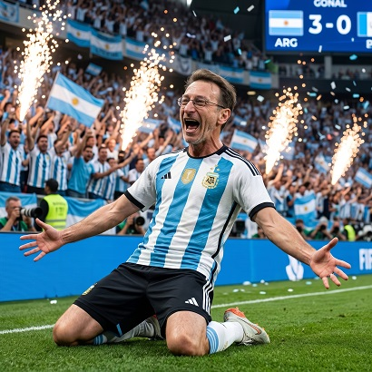

PROMPT MUNDIAL

Prompt para copiar
Ultra hyper-realistic cinematic sports portrait of the EXACT SAME PERSON from the reference image, preserving with maximum precision and identity-lock accuracy every facial and physical feature. The result must look unmistakably like the real person from the reference photo, with identical face shape, eyes, smile, hairstyle, skin texture, age, body proportions and anatomy. The subject is wearing the official national football team jersey of 👉 ((PAÍS)). The uniform design, colors, symbols and visual identity must accurately represent the football selection of ((PAÍS)), with ultra realistic fabric texture, authentic stitching, folds, sweat and premium sportswear details. The character must ALWAYS appear in a DIFFERENT iconic triumphant football celebration pose inspired by the football culture and legendary celebrations of ((PAÍS)). Every generation MUST create a NEW and UNIQUE victory gesture or emotional celebration moment typical of football players from ((PAÍS)). Examples of poses and emotions that should RANDOMLY vary in every image: screaming a goal with explosive emotion arms raised to the sky after winning sliding on knees celebrating pointing to the crowd kissing the jersey badge clenched fists and roaring jumping in victory emotional champion celebration after final whistle celebrating like a national football hero hands on chest looking proudly to the stadium iconic football celebration pose inspired by real players from ((PAÍS)) The pose, body language, camera angle and emotional expression MUST be DIFFERENT in every generation while maintaining the same facial identity from the reference image. ABSOLUTE PHOTOREALISM — real-life sports photography style, NOT illustration, NOT painting, NOT CGI, NOT cartoon. Captured as if photographed with a professional full-frame camera and cinematic telephoto lens. Ultra detailed skin pores, natural imperfections, realistic lighting interaction, authentic shadows, realistic muscle tension and cinematic depth of field. Epic football stadium atmosphere inspired by ((PAÍS)): massive crowd, stadium lights, smoke, sparks, fire bursts and cinematic energy effects using the representative colors of ((PAÍS)), naturally integrated into the environment without losing realism. Hollywood-level sports photography, HDR, ultra sharp focus, 8K quality, dramatic cinematic lighting, realistic depth, emotional World Cup final atmosphere and premium football commercial aesthetic. IMPORTANT: The ONLY thing that should change between generations is the country: ((PAÍS)). ALWAYS generate a DIFFERENT football celebration pose and emotional reaction in every image. NEVER repeat the same body posture, hand gesture, facial emotion or camera angle. Automatically adapt jersey design, colors, stadium atmosphere and celebration energy to ((PAÍS)). Keep the SAME facial identity and physical appearance from the reference image in every generation. Maintain realistic anatomy and proportions. Hyper realistic sports photography style only.